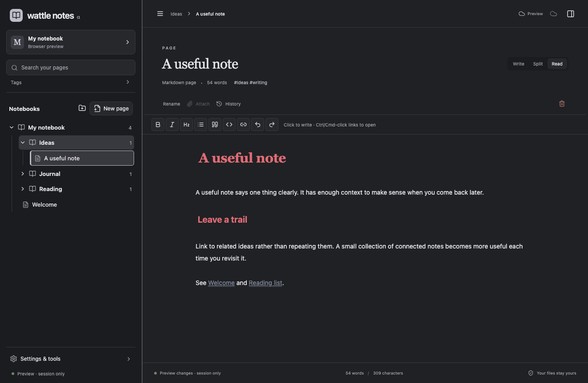

Your writing has a home.
Notes are Markdown files in a folder you choose. Bring existing notes, add attachments, and export your notebook whenever you like.
A small, independent notebook
Write in plain Markdown. Connect an idea. Find it again.
Keep your words in files you own.
Free and open source. No account needed for local notes. Mostly vibe coded with AI assistance.

The actual app, with example notes. Preview the five themes above.
Notes are Markdown files in a folder you choose. Bring existing notes, add attachments, and export your notebook whenever you like.
Wiki links, backlinks, tags and local search help you find the thought you were looking for. Switch between writing, split preview and reading.
Autosave and retained revisions help you pick up where you left off. Deleted notes can be recovered from history.
Five themes, including neutral Charcoal, deep Midnight and warm Sepia. Your light and dark choices stay with you.
Your words. Your files.
Local writing works without a login. The app has no telemetry or AI service sending your notes elsewhere.
Optional Google Drive sync encrypts note contents before upload. Nextcloud / WebDAV is a separate, optional encrypted backup option.
Local files are unencrypted. Google can see filenames and folders. Cloud features are in alpha and still need live service validation; the current downloadable build requires developer Google setup.
Read the privacy detailsWattle Notes is an early alpha. Start with a test folder and keep a separate backup of important writing.
macOS · Apple Silicon · developer alpha
Local Markdown notes, links, history and five themes. This build is unsigned and not notarized. Google sign-in is not preconfigured.
View GitHub ReleasesGPL-3.0-or-later. Windows and Linux packaging still need platform testing.
Small app. Open future.
Wattle Notes is mostly vibe coded with AI assistance, originally created for my own use. It is free and open source, with no subscription required.
Useful feedback and thoughtful contributions are welcome. The GitHub repository includes build instructions and the license.